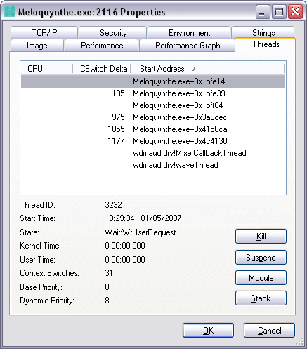

Date de publication : 8 mai 2007 15h15
Auteur : BeatriX
2. Approche
De prime abord, comment attaquer l'analyse d'un tel binaire ? Quelle a été ma démarche pour comprendre ce qu'il se trame derrière ce joli gfx et cette mélodieuse musique ?
2.1. Unpacker la cible
Avant de désassembler ou de débogguer, j'essaie toujours de voir si le binaire est compressé, crypté, bref, s'il dispose d'un système de protection générique contre l'analyse. On va tout d'abord scanner le binaire à la recherche de signatures de packers connus. Pour cela, je vous propose d'utiliser PEID 0.94. Voici ce qu'on obtient :
UPX (the Ultimate Packer for eXecutables) est un compresseur qui utilise la technologie NRV (Not Really Vanished). Je n'entre pas dans le détail et je considère pour la suite que vous avez unpacké la cible que vous pouvez toujours récupérer ICI.
2.2. Supprimer l'obfuscation de code
Une autre protection a été ajoutée à ce binaire. Si on trace quelques lignes de code avec un débuggueur, on constate que l'affichage se comporte de façon bien étrange : en effet, entre chaque instruction à exécuter, il y a un saut inconditionnel (jmp). Ceci à pour effet de morceler complètement le programme et le tracing devient nettement plus pénible. Le désassemblage ne peut également pas se faire correctement a priori et l'analyse est donc fortement perturbée. Regardez par vous même ce que ça donne :
A cela s'ajoute un autre problème . Il semble que l'auteur du meloquynthe a également attaqué les sauts conditionnels de la forme "je". En effet, chaque saut de ce type est suivi de son homologue négatif "jne" alors que la logique classique voudrait que suive la routine à exécuter si le "je" n'est pas vérifié. Ces "jne" sont donc en trop et sont là clairement pour nous ennuyer un peu plus.
Il serait souhaitable de coder un outil pour remettre de l'ordre dans le code. On peut imaginer un script IDA ou OllyDbg qui fera le ménage à notre place en filtrant les instructions durant l'exécution et qui loguera le résultat. Voici par exemple un petit script très rudimentaire pour le plugin ODbgScript 1.46 de Epsylon3 :
// AntiYol.txt - script par BeatriX // ------------ Déclare un dword var x Scan: // ------------ Récupère 4 bytes situés à eip MOV x, [eip] // ------------ Récupère le premier byte, si c'est un JUMP, on ne loggue pas AND x, FF cmp x, E9 JNE LOGGUER // ------------ F8 (tracing) STO jmp Scan LOGGUER: // ------------ Récupère le mnémonic situé en eip et le logguer OPCODE eip log $RESULT_1,"" STO JMP Scan
Ce script permet de logguer (dans la fenêtre des logs) les instructions qui ne sont pas des JUMP. Ce n'est pas totalement satisfaisant mais ça permet, si c'est utilisé sur de bonnes adresses d'éviter de transpirer trop longtemps...
On peut également réaliser un outil un peu plus sophistiqué de type désassembleur autonome.J'ai donc codé pour l'occasion mon DeObfuscator spécial meloquynthe qui va donc se charger de désassembler le code en omettant d'afficher les jumps tout en suivant ces sauts pour suivre le déroulement du programme. Il va également se débarrasser des "jne" en trop. Il va même un peu plus loin puisqu'il va traiter tous les couples Jcc/Jncc ou Jncc/Jcc et va systématiquement supprimer le second saut. Ce petit programme utilise mon moteur de désassemblage BeaEngine 2.1 et est disponible ICI. Voyez plutôt ce que ça donne sur l'Entry Point :
Les symbols n'étant pas reconnus, il faut les retrouver à l'aide de OllyDebugger par exemple. Cependant, grâce à cet outil, on voit clairement le code sans aucune difficulté.
On peut aussi ne pas s'encombrer de ce genre de subtilités et faire confiance à sa touche préférée surpuissante :

C'est fou ce que cette touche fait des miracles sous OllyDebugger...après quelques minutes de tracing, on s'habitue à ce genre d'obfuscation et finalement, à l'aide d'un papier et d'un bon crayon, on parvient à analyser tranquillement ce binaire.
2.2. Analyser les fonctions importées.
Après avoir fait un peu de ménage, on commence à zieuter les fonctions windows utilisées par le binaire. Il arrive dans des cas sympathiques que toutes les fonctions utilisées soient stockées dans le hint/name array. Avec OllyDebugger ou un éditeur de PE, on peut obtenir de précieuses informations.Par exemple, utilisons CFF Explorer de Ntoskrnl :
On peut ainsi classer les fonctions en différentes catégories. On remarque aussi certaines fonctions spécifiques qui mériteront d'être observées en milieu naturel. Voici les pistes à suivre :
********************************** THREADS
kernel32.CreateEventA kernel32.CreateThread <--------- Il faut étudier ceci kernel32.DeleteCriticalSection kernel32.EnterCriticalSection kernel32.InitializeCriticalSection kernel32.ExitThread kernel32.LeaveCriticalSection kernel32.SetEvent kernel32.WaitForSingleObject <--------- Il faut surveiller ceci
********************************** GESTION DE FENETRE
user32.CreateWindowExA user32.RegisterClassExA <-------------- A étudier également
********************************** GESTION DE LA MUSIQUE
winmm.waveOutClose winmm.waveOutGetPosition winmm.waveOutOpen winmm.waveOutPrepareHeader winmm.waveOutReset winmm.waveOutUnprepareHeader winmm.waveOutWrite
Il devient impératif de se documenter sur l'usage de ces fonctions. On ne fait que très rarement du reversing pur à partir du code. Il faut absolument s'aider de docs déjà existantes. J'utilise donc le MSDN, les articles de ICZELION pour y voir plus clair sur l'usage des threads et des fonctions WaveOut.
2.3. Le multi-threading
Utilisons pour commencer Process Explorer de Mark Russinovitch, un outil de Microsoft Sysinternals. Voici ce que l'on obtient :

On voit donc 8 threads en fonctionnement. On remarque que 2 threads MixerCallbackThread et waveThread sont utilisés par le driver wdmaud.drv responsable de la gestion du son. Pour les autres, nous obtenons les offsets 0x5BFE14, 0X5BFF04, 0X5BFE39, 0x7A3DEC, 0x81C0CA et 0x8C4130. Nous allons être obligés d'analyser chaque thread en statique pour comprendre l'esprit du crackme.
2.3. Analyser les contrôles
Nous sommes ici en présence d'une fenêtre dite "skinnée", c'est-à-dire que son apparence réelle est modifiée. Nous n'y voyons pas l'agencement réel de ses contrôles. Il est toujours bon de connaître un maximum d'éléments pour pouvoir éviter une analyse trop longue par méconnaissance des éléments constitutifs du binaire. On utilisant un outil comme Win X de Holyview, il est aisé de dénombrer les contrôles voire même de les faire apparaître clairement en modifiant dwStyle et dwExStyle comme le montre le screenshot suivant :
Nous voyons donc clairement 14 contrôles que l'on peut classer en 4 catégories :
- Catégorie 1 : (mauve) Les boutons clignotants
- Catégorie 2 : Le contrôle rouge qui affiche du texte dans le petit écran.
- Catégorie 3 : (vert) Les scintillements dans la tentacule.
- Catégorie 4 : 5 boutons (grisés) qui réagissent aux clics de la souris.
On peut aussi essayer de récupérer les IDs des boutons. Pour cela, il suffit de poser un BP sur CreateWindowExA et de récupérer la valeur du paramètres hMenu :
De cette manière, on obtient les IDs des 5 boutons : 1FB, 1FC, 1FD, 1FE, 1FF.
A partir de là, on passe à l'analyse du code. A cause du multi-threading, nous sommes obligé de faire une étude statique...
Copyright (C)- FRET (2006)